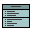
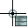
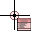
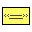
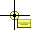
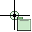
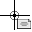

You activate element entry mode by pressing one of the buttons on the toolbar, or by pressing the coinciding shortcut key. You can cancel entry mode by pressing Escape.
| Toolbar | Cursor | Shortcut | Name | Description |
|---|---|---|---|---|
|  |  | C | Class | Classes are the most versatile and commonly used element in a diagram. A class can contain attributes and operations. Classes can have associations and generalizations. |
|  | E | Enumeration | An enumeration is a data type which can take on a fixed list of values, its literals. Enumerations cannot have generalizations. A class may associate with an enum, but not the other way around. | |
|  |  | D | Primitive | A primitive is the simplest data type. It only has a name. Primitives are used to represent very simple data types, such as the built-in numeric and string types in a language. A primitive has no relationships. A class may derive from or associate with a primitive. |
|  | P | Package | A package is a way to group related elements together. A package may contain classes, primitives, enumerations, or other packages. A package does not have any relationships besides containment. | |
|  | H | Comment | Comments are short remarks that can be placed on the diagram. Comments are completely detached from the rest of the model; there are no relationships with any other elements. Comments also cannot be put into a package. |
In element entry mode, you can create a default sized element by simply clicking, or you can click and drag to create a custom sized element.